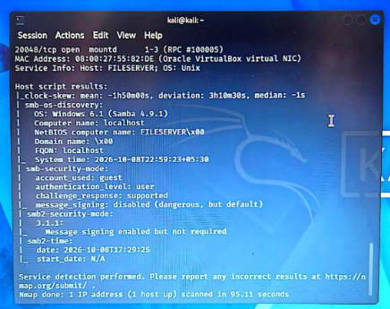
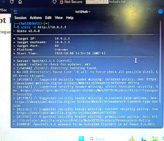
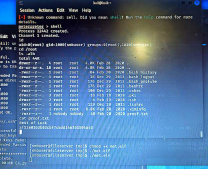

Actividad 13: Red Team Report - Pentesting de My File Server 1
Nivel
Avanzado / Red Team Analyst
Objetivo del proyecto
Desarrollar un informe técnico profesional de pruebas de penetración (Pentesting Report) sobre la máquina vulnerable My File Server 1, aplicando una metodología estructurada de evaluación de seguridad, documentando hallazgos, evidencias técnicas, análisis de riesgo y propuestas de mitigación.
Alcance y Metodología
El entorno evaluado simula una infraestructura corporativa vulnerable orientada a servicios de almacenamiento y servidor de archivos. Para esta evaluación, se actuó bajo el rol de analista Red Team, aplicando marcos de trabajo reconocidos en la industria como PTES y directrices OWASP.
- Fase 1: Reconocimiento y Enumeración
- Fase 2: Identificación de Vulnerabilidades
- Fase 3: Explotación (Acceso Inicial)
- Fase 4: Escalada de Privilegios
Hallazgos y Ejecución Técnica
Fase de Reconocimiento y Enumeración:
Mediante escaneos de red activos (Nmap) se identificaron múltiples servicios expuestos, destacando un servidor FTP con acceso anónimo habilitado y un servicio ProFTPD 1.3.5 vulnerable. Asimismo, se enumeraron recursos compartidos y usuarios mediante los protocolos SMB y NFS.

Explotación Inicial:
Se aprovechó una vulnerabilidad crítica en el módulo mod_copy de ProFTPD. Esta falla permitió manipular archivos internos para implantar una llave pública SSH autorizada por el atacante, logrando acceso inicial al sistema bajo el usuario smbuser.

Escalada de Privilegios:
Tras obtener el punto de apoyo inicial, la enumeración local reveló que el sistema era susceptible a CVE-2021-4034 (PwnKit). Utilizando el framework Metasploit, se explotó el componente Polkit, logrando escalar privilegios exitosamente al usuario root y comprometiendo la integridad total del servidor.
